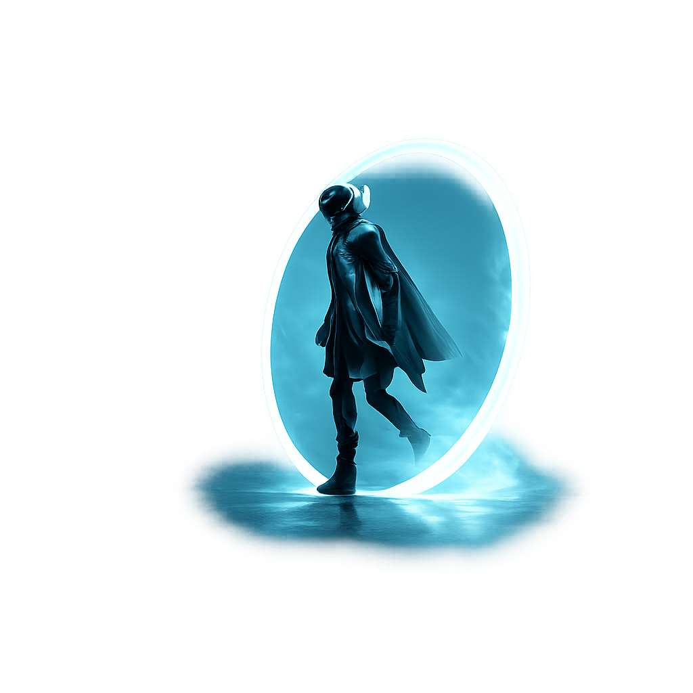

PREV
NEXT
NUO
HOME
ABOUT
TOKEN
ROADMAP
JOIN US
N
U

R
B
I
T
DISCOVER DIGITAL ART AND COLLECT NFTS
|
LET'S ORBIT
→
27K+
ARTISTS
876K+
ARTWORK
20K+
AUCTION
PLAY VIDEO
f
×
✦ INJECTING CYBERSTREAM LINK
NUORBIT DIGITAL TRAILER
Calibrating decentralised streaming networks. Telemetry secured successfully.